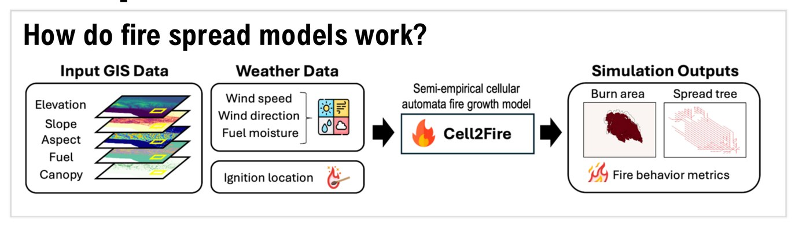
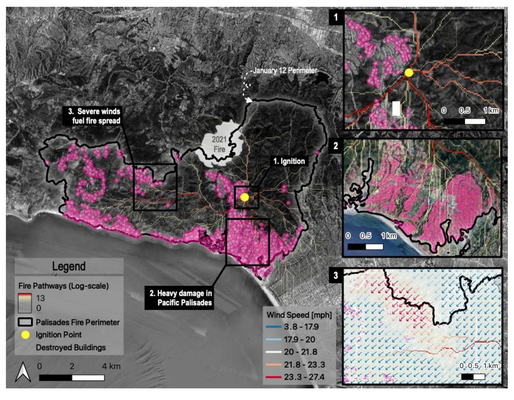

Computational Modeling
Overview
Computational modeling is how I turn wildfire behavior into something measurable and testable before it happens. In today's era of climate extremes, natural hazards like wildfires are increasing in frequency, intensity, and scale beyond our capacity to respond effectively. Model simulations let us anticipate potential fire behavior and plan proactively, generating risk assessments that are paramount to protecting human lives, infrastructure, and ecosystems from unprecedented catastrophe.
My Work
Wildfire: Fire Spread Modeling
Fire spread models (FSMs) simulate how a fire will propagate across a landscape, information that's critical for anticipating risk and planning proactively. I benchmarked and optimized Cell2Fire, a cellular-automata FSM based on semi-empirical fire physics, across synthetic and real landscapes in the US, Canada, and Chile, the first application of the model to US terrain. I developed a multi-objective optimization method that scales the simulated fire's elliptical shape to better match observed rates of spread, and used blackbox optimization to fine-tune the simulation against a real burn scar, improving prediction accuracy (F1-score from 0.74 to 0.83) while running an order of magnitude faster than benchmark simulators like FARSITE and Prometheus. To evaluate model uncertainty and sensitivity more broadly, I used a machine-learning-based surrogate model to assess robustness and feature importance through explainable AI methods.

Fire spread models often assume constant wind speed and direction, which misses the spatiotemporal complexity that actually drives fire behavior. I coupled Cell2Fire with WindNinja, a physics-based solver that downscales weather-model wind fields to high resolution while conserving mass and momentum, and evaluated the approach on the 2025 Palisades Fire, simulating its rapid spread over the first 32 hours. Adding the momentum solver on top of a mass-only solver further reduced the model's tendency to overestimate burned area, producing fire spread that more closely tracked the fire's real, wind-driven path through Pacific Palisades.

Machine Learning & Deep Learning
Machine learning and deep learning are how I generate the high-resolution datasets that feed directly into the fire models above. I built MSMLA-Net, a multi-scale, multi-level attention network, to classify Local Climate Zones from Sentinel-2 imagery and ancillary GIS data: a multi-scale (MS) module extracts features at multiple spatial scales, a modified SE-ResNet backbone processes them through three residual blocks, and a multi-level attention (MLA) module applies channel-and-spatial attention (CBAM) at each depth rather than just the final layer, before all four attention outputs are fused for classification. I've applied the same semantic segmentation toolkit elsewhere to map high-resolution enhanced landforms and surface fuel models that feed directly into the fire spread simulations above. Click through the architecture below:
Click a stage above to see what it does. MSMLA-Net architecture from Kim, Jeong, & Kim (2021), ISPRS Journal of Photogrammetry and Remote Sensing, 181, 345–366.